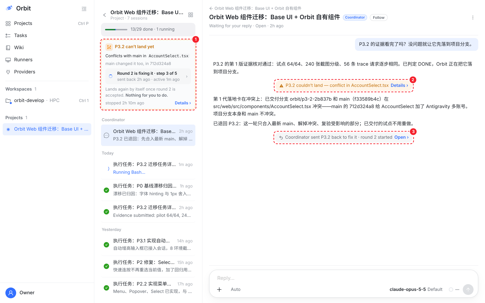
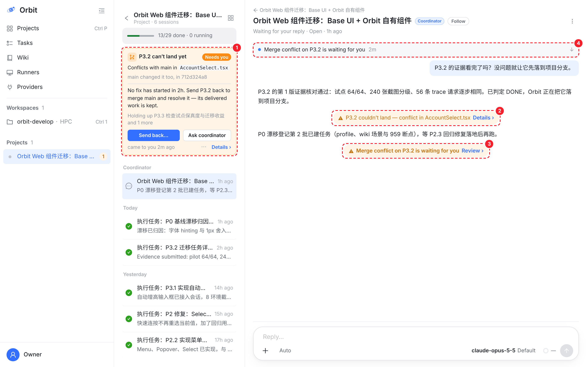
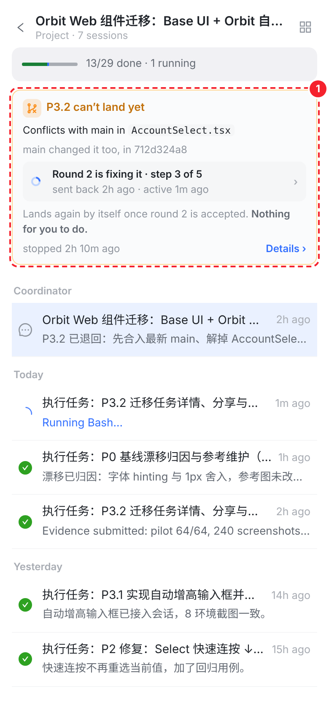
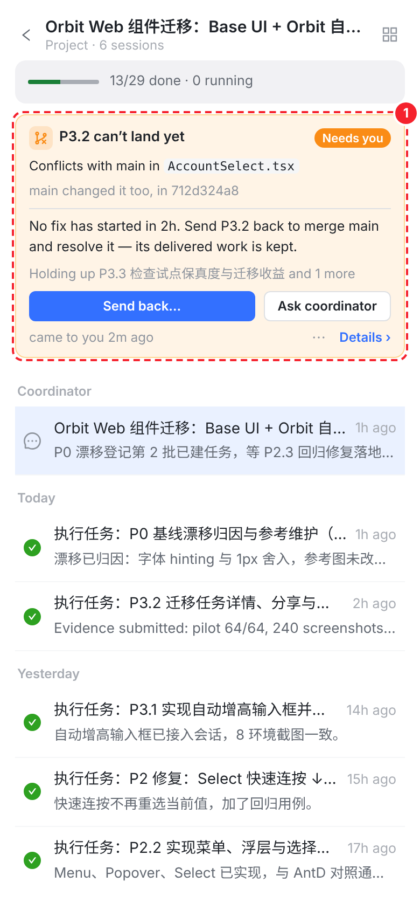

和 10-06 挪合入卡的做法一样：把冲突当成项目里那次落地的一件事，而不是对话里的一条消息。卡片放在项目会话页进度卡下面（合入卡的位置）。协调会话里每个时刻只留一行。卡片永远先回答一句：要不要你做事。
上图是这次的真实情况：协调者已经退回 P3.2，第 2 轮在修，所以卡是琥珀色，写 “Nothing for you to do”。下图是另一种情况：2 小时没有任何修复开始（协调者没接），这时卡才变橙，并且只给一个主按钮。两帧都截自真实控制台，方案部分用控制台自己的样式画进页面。

AccountSelect.tsx · main changed it too, in 712d324a8。


